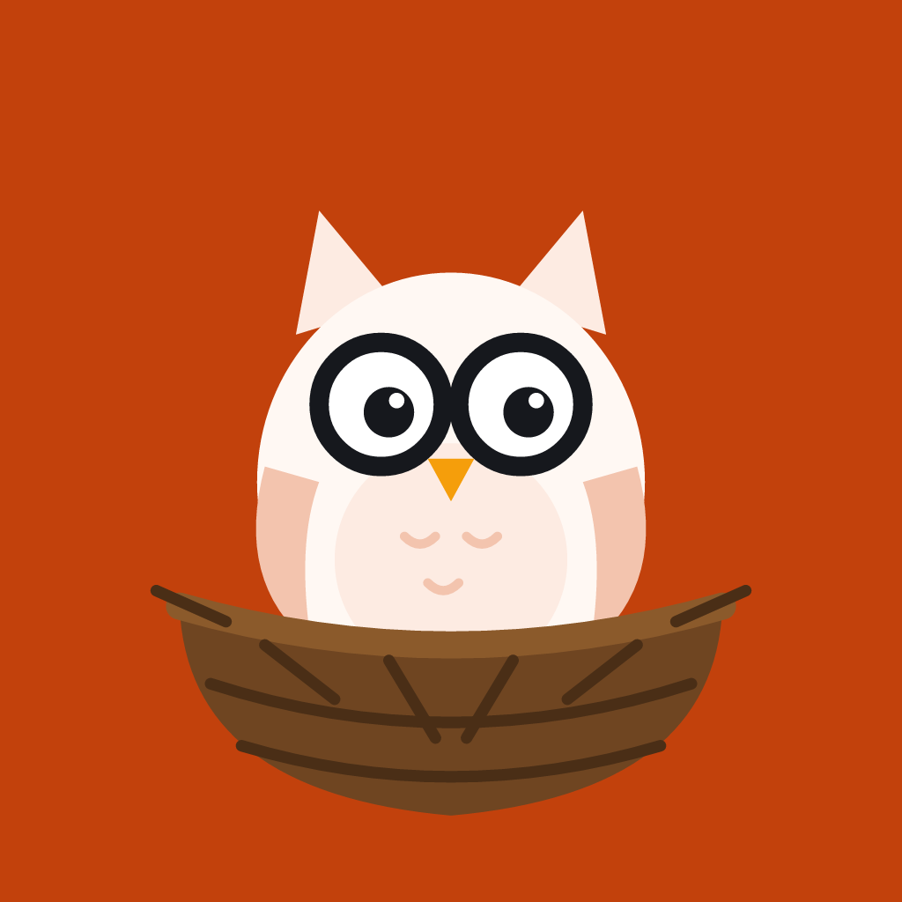

Nooks OwlA quiet corner to talk with kind people
Nooks Owl is a voice chat app for adults. Post a topic you'd like to talk about, find people who are open to calls, and keep in touch with text, voice notes and hoots.

Nooks OwlNooks Owl is a voice chat app for adults. Post a topic you'd like to talk about, find people who are open to calls, and keep in touch with text, voice notes and hoots.